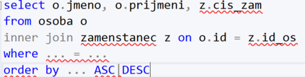
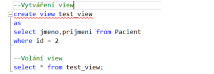

Jazyk-SQL-SELECT-VIEW
Otázky
Co je to SELECT a k čemu je
Co je to VIEW a k čemu je
Jaké znáš agregáční funcke
K čemu je JOIN a jeho druhy
Select
příkaz pro zobrazení dat v DB
zobrazí data z jedné nebo více tabulek
můžeme použít podmínky WHERE, HAVING, GROUP BY, ORDER BY

Where
matematický operátor
log operátory
podle množiny
podle vzoru
not null
Order by
řízení řazení dat při výpisu
řazení vzestupně ASC nebo sestupně DESC
Group by
seskupený dotaz - pro každou skupinu vytvoří jednoduchý souhrn
Having
je určen jako podmínka pro skupiny --> bez group by nemá smysl
pracuje jako WHERE, ale může obsahovat Agragáční funkce
Agregáční funkce
funkce, které pracují s jedním argumentem a vrátí jen jednu výslednou hodnotu
mohou být POUZE za SELECT nebo HAVING
pro odstranění duplicit slouží DISTINCT
COUNT() - vrací počet záznamů, parametr není důležitý - stačí *
MAX() - vrací nejvyšší hodnotu, použití pro INT, VARCHAR, DATE
MIN() - vrací nejmenší hodnotu, použití pro INT, VARCHAR, DATE
AVG() - vrací aritmetický průměr, použití pro INT
SUM() - vrací součet záznamů, použití pro INT
Spojení tabulek JOIN
Spojování dvou a více tabulek pomocí JOIN
INNER JOIN
výpis průniku množin dat z obou tabulek
LEFT(RIGHT) JOIN
výpis všech dat z levé(pravé) tabulky a průnik
OUTER JOIN
výpis všech dat z obou tabulek --> sjednocení množin
View
Virtuální tabulka sestavená z výsledků SQL příkazu, definice je uložena na straně serveru
bývá často kombinací více tabulek v DB (pomocí JOIN)
můžeme opakovaně volat bez nutnosti opakovaného psaní SQL Selectů
má stejnou syntaxi jako SELECT
neobsahuje skutečná data, ale slouží k uložení často používaných nebo složitých selectů, jeden VIEW = jeden SELECT
slouží také jako ochraný mechanismus, který dovolí uživatelům pouze přístup k viditelným datům ve VIEW nikoliv ke skutečným datům v tabulce

Sum-up
Select --> výpis dat z db
View --> virtuální tabulka uložená na serveru. Bezpečnost dat. Neobsahuje skutečná data
WHERE, GROUP BY, HAVING, ORDER BY
Agregáční funkce --> funkce co mají na vstupu 1 atribut a vrací 1 výsledek
JOIN - INNER, OUTER, LEFT/RIGHT